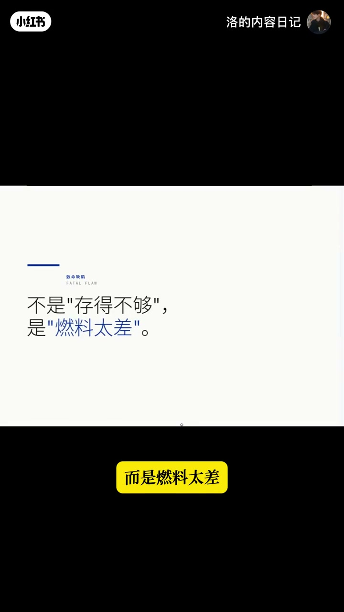
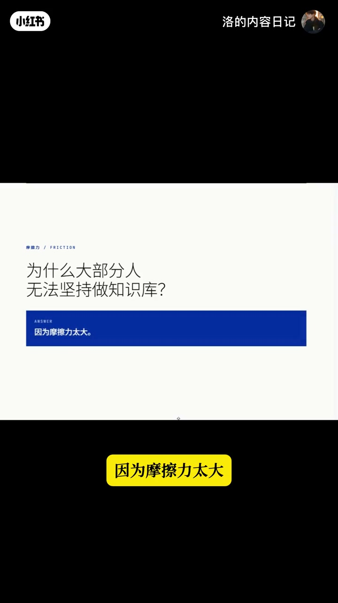
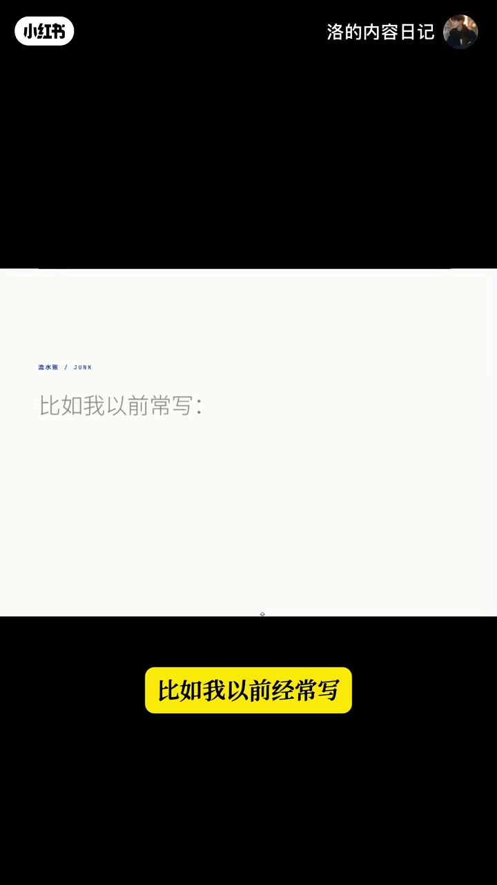
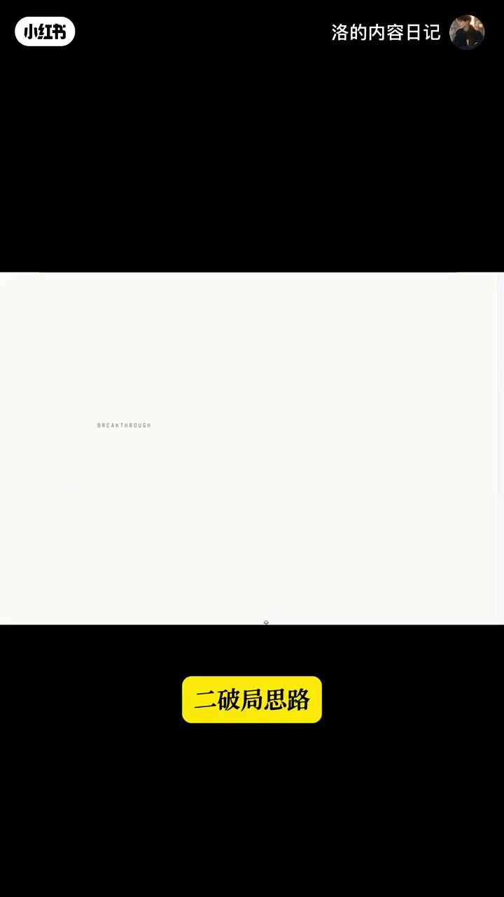
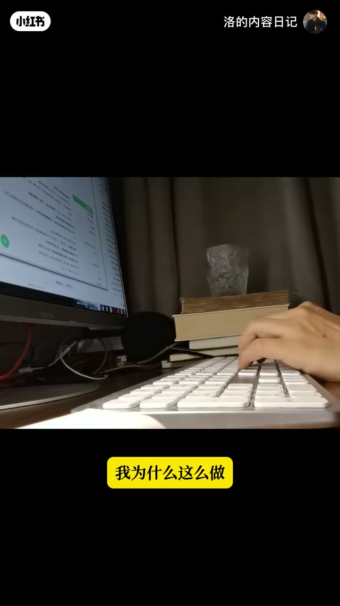
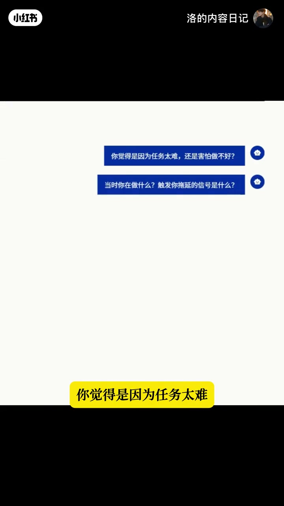
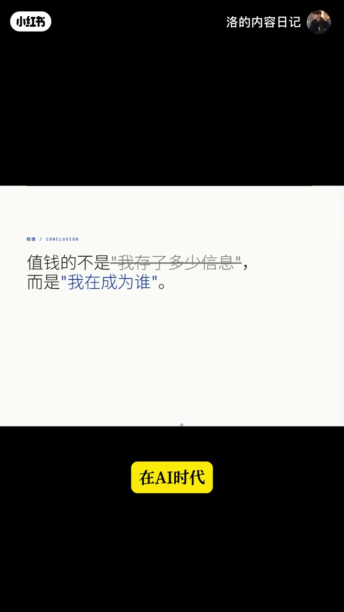

内容要点
一支 3 分半的反思型视频。UP 主做了 6 年笔记、深度使用 AI 知识库一年多，在全网吹捧「第二大脑」时却选择放弃，连 Obsidian 都再没打开。原因是存了 1000 条笔记、真正有用的不到 50 条。他从底层剖析知识库的致命缺陷：不是存得不够，而是「燃料太差」——白纸记录摩擦力大，多数人坚持不下来就记流水账，产出的是没有上下文、AI 无法点燃的死语料。他的破局思路是从被动记录转向苏格拉底式引导：取消文件记录和手动整理，只保留「对话」一个功能，让 AI 像心理教练一样反问追问。结果是知识库自己长成一棵树，认知被加工出密度。核心观点：AI 时代比的不是存了多少信息，而是认知被加工到什么密度。
知识结构
6 年笔记 + 1 年深度用 AI 知识库，却选择放弃：存了 1000 条笔记，真正有用的不到 50 条。AI 检索再强也救不了低质量的原料。
知识库不难做，难的是写出好燃料。白纸记录摩擦力大，坚持不了就记流水账（「今天又拖延了好烦」）——没有上下文，是死语料。90% 的知识库成为数字坟墓。
从被动记录转向苏格拉底式引导：取消文件记录和手动整理，只保留「对话」——人天生擅长说话不擅长写文章。AI 像心理教练一样反问：任务太难还是害怕做不好？
没有任何整理动作，知识库长成一棵树：困惑连着输入、输入连着实验。AI 时代比的是认知被加工到什么密度，不是存了多少信息。
知识库贬值的根因不是工具，而是「燃料」质量：被动记录产出的流水账是死语料，AI 无法点燃。解法是转向苏格拉底式引导——用低摩擦的对话替代高摩擦的写作，让 AI 反问追问把碎语料加工成可用燃料。价值不在于存了多少，而在于认知被加工到什么密度。
00:00-00:36开场：6 年笔记，选择放弃第二大脑
视频以自我经历开场：「我自己做了6年笔记，深度使用AI知识库一年多，在全网都在吹捧第二大脑时，我却选择了放弃，甚至连Obsidian都再没有打开。」
放弃的理由很现实：「我曾存了1000条笔记，最后发现真正有用的不到50条。」
更关键的发现是：「AI的检索能力太强，也救不了低质量的原料。」——检索技术只能帮你把存过的东西找出来，改变不了内容的底层质量。UP 主预告要从底层剖析知识库的致命缺陷，以及摸索出的未来形态。
00:37-01:48致命缺陷：不是存得不够，而是燃料太差
「知识库的致命缺陷不是存得不够，而是燃料太差。」大家都说知识库是 AI 的专属燃料，但「做知识库很简单，能写出好燃料却极其困难」。
坚持不下去的根本原因是摩擦力：「面对一张白纸和空白文档，大脑会瞬间进入高认知负荷，构思、组织这些过程都太烦人性了。」
为了坚持，很多人退而求其次记流水账：「今天又拖延了好烦。」这种话对 AI 毫无用处——「AI拿到这些燃料，无法分辨底层的情绪需求和真实归因，没有上下文，这就是一句死语料」。
于是「辛辛苦苦记了一年，结果存进去的全是未加工的碎片」，AI 无法给出真正懂你的建议。结论很重：「90%的知识库成为数字坟墓，不是因为你找不到它，而是因为里面的燃料质量太差，根本点不燃AI。」



01:49-02:40破局思路：从被动记录转向苏格拉底式引导
「破局思路：从被动记录转向苏格拉底式的引导。」想通这点，UP 主放弃现有知识库工具，搭了一个反常识的实验系统。
实验系统的关键动作是「取消所有文件记录和手动整理功能，只保留了一个功能：对话」。理由是人天生擅长说话不擅长写文章，「对话的摩擦力是极低的」。
更重要的是对话不是闲聊，而是设定了苏格拉底式引导：当你说「今天拖延了好烦」，它不会原样存下来，而像心理教练一样反问：「你觉得是因为任务太难，还是害怕做不好？你当时在做什么？触发拖延的信号是什么？」
「拖几轮对话，会被拆解成可用的燃料」——追问把模糊的情绪抽丝剥茧成具体的归因和信号，这正是好燃料。


02:41-03:25结果：知识库自己长成树，价值在认知密度
「一段时间后我打开它的看板，发现一件意想不到的事：我没有任何整理的动作，但我的知识库竟然长成了一棵树。」
树的结构是自组织的：「困惑连着输入，输入连着实验，实验又长出新的困惑」，甚至有一条看不见的线，「从我第一天写下『我想成为什么样的人』，一直传到了今天的复盘」。
这引出了核心顿悟：「AI时代比的不是我存了多少信息，而是我的认知被加工到了什么密度。」知识库只能回答「我存了什么」，回答不了「我能成为什么样子」。
结尾：不再整理笔记，「我的知识库自己会生长，但它可能已经不是知识库的样子了」——从一个存储容器，变成了一个认知加工系统。


完整转录（95段）
以下文本由 Whisper medium 模型自动转录，可能存在少量识别误差，已尽可能修正。
我自己做了6年笔记
深度使用AI家智智库一年多后
在全网都在吹捧第二大脑室
我却选择了放弃
甚至连Oxydian都再没有打开
为什么
因为我曾存了1000条笔记
最后发现真正有用的不到50条
但我发现了一个致命问题
AI的检索能力太强
也救不了低质量的鱼鸟
今天我就想从底层剖析
当前智智库的致命缺陷
以及我摸索出来的可能的未来形态
第一
智智库的致命缺陷不是存得不够
而是燃料太差
大家都说智智库是为给AI的专属燃料
但很少有人意识到
做智智库很简单
但能写出好燃料却极其困难
为什么大部分人无法坚持做智智库
因为摩擦力太大
对于普通人来说
面对一张白纸和空白文档
大脑会瞬间进入高认知复合
构思
组织原本这些过程都太烦人性了
为了坚持
很多人退而求其次
击下流水章
比如我以前经常写
今天又拖延了好烦
类似的话
这些话遵循智智库有用吗
毫无用处
因为AI拿到这些燃料
无法分辨底层的情绪需求
和真实归因
没有上下文
这就是一句死语料
于是你辛辛苦苦为了一年
结果发现存进去的全是个未加工的碎片
AI无法基于这些废话
给你提供真正懂你的建议
所以90%的智智库成为数字坟墓
不是因为你找不到它
而是因为里面的燃料质量太差
根本点不染AI
而破于思路
从被动记录转向苏格拉底式的引导
想通这点
我放弃了现有的智库工具
搭了一个反常识的实验系统
我取消了所有文件记录
和手动整理功能
这保留了一个功能
对话
我为什么这么做
因为人天生擅长说话
不擅长写文章
对话的摩擦力是极低的
但我不仅是对话
我也系统设定了苏格拉底式的引导设定
当我说今天拖延了好凡
它不会像传统笔记那样圆样存下来
而像一个心理教练一样反问我
你觉得是因为任务太难
还是害怕做不好
你当时在做什么
触发拖延的信号是什么
拖几轮豆花
会被拆卸成可用的燃料
一段时间后我打开它的看板
发现一件意义要不到的事
我没有任何整理的动作
但我的智智库竟然长成了一个树
困惑连着输入
输入连着实验
实验又长出新的困惑
甚至有一条看不见的线
从我第一天写下
我想成为什么样的人
一直传到了今天的覆盘
那一刻我恍然大悟
在AI时代之前的不是我存了多少信息
而是我的认知被加工到了什么密度
智智库只能回答我存了什么
回答不了我能成为什么样子
只有每天被真实看见
深度追问不断推进
才能找出答案
于是现在我不再整理脾气了
我的智智库自己会生长
但它可能已经不是智智库的样子了